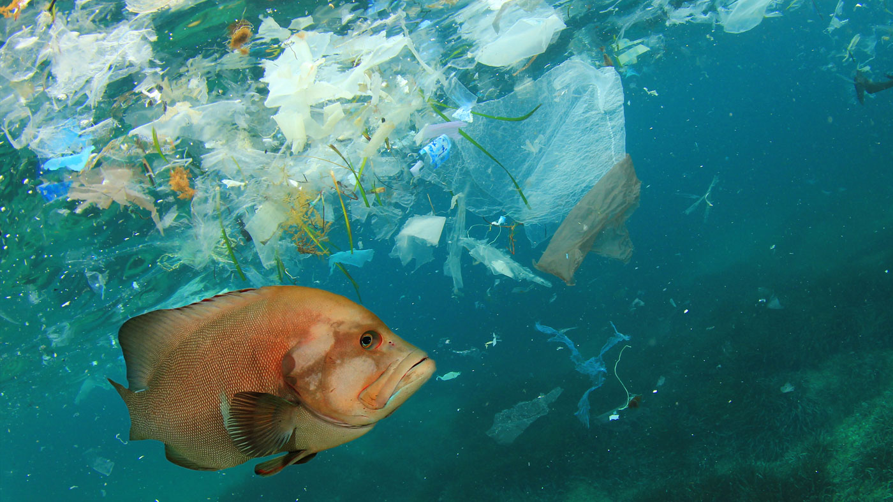
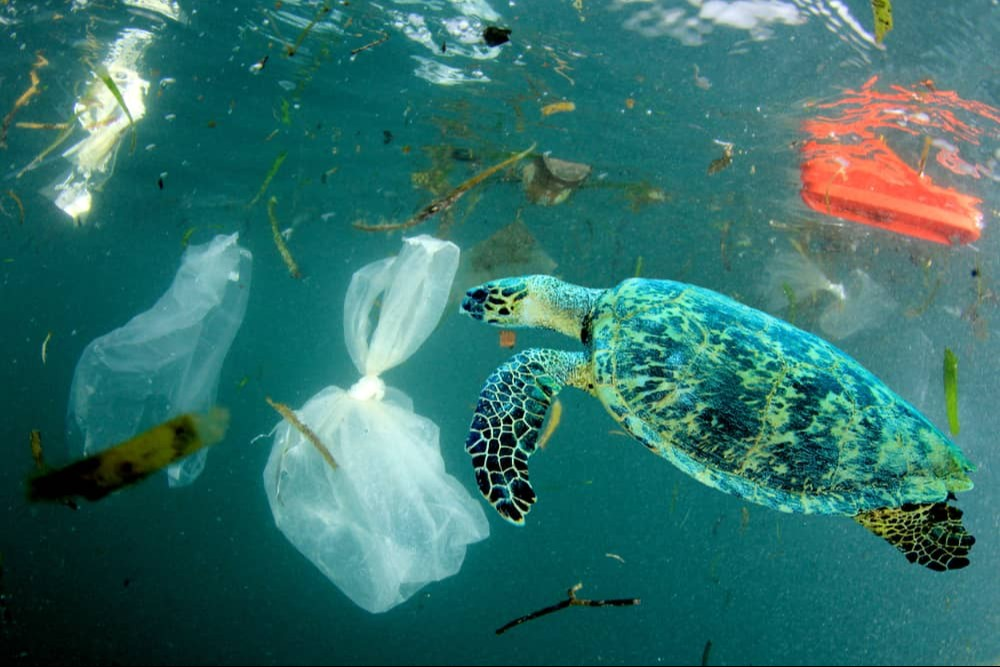

#limpeza dos mares
A tecnologia a serviço do meio ambiente
A poluição marinha é hoje um dos maiores desafios ambientais do século XXI.
Toneladas de plásticos, metais pesados e resíduos químicos são despejados nos oceanos todos os anos,
comprometendo a vida de milhares de espécies e colocando em risco o equilíbrio do planeta.
Esse problema não afeta apenas a fauna e a flora marinha, mas também a saúde humana e a economia global, já que milhões de pessoas dependem do mar como fonte de alimento e renda.
A poluição marinha é fruto de séculos de exploração e descuido.
No início, os mares recebiam restos simples, mas com o crescimento das cidades e do comércio marítimo, o descarte de lixo e esgoto aumentou.
A Revolução Industrial intensificou o problema com produtos químicos, metais pesados e petróleo.
Já no século XX, o uso massivo do plástico transformou os oceanos em depósitos de resíduos duradouros.
Hoje, somam-se ainda agrotóxicos, esgoto e até lixo eletrônico, resultando em graves danos à vida marinha e ao equilíbrio ambiental.
Com o uso de tecnologias inovadoras, busca-se não apenas reduzir a poluição dos mares,
mas também recuperar ecossistemas inteiros que hoje estão ameaçados.
A expectativa é diminuir a quantidade de plásticos e resíduos tóxicos na água, restaurar habitats naturais e, ao mesmo tempo,
proteger milhares de espécies que dependem desses ambientes para sobreviver.
No longo prazo, o objetivo é criar um convívio mais equilibrado entre sociedade e natureza, onde o desenvolvimento humano ande lado a lado com a preservação dos oceanos.
Barreiras flutuantes inteligentes: coletam resíduos plásticos antes que alcancem o oceano aberto.
Drones aquáticos: monitoram a qualidade da água e recolhem lixo em tempo real.
Águas-vivas submarinas: removem microplásticos e detritos em locais de difícil acesso.
Reciclagem avançada: transforma o lixo coletado em novos materiais, diminuindo a produção de plásticos virgens.
